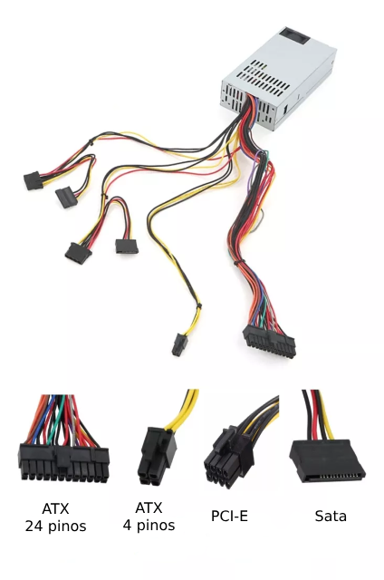

Curso de TI - Liberato
Organização de Computadores
Aqui você aprenderá o que é uma fonte de computador, qual a função dela e como escolher na hora na compra.
Se o consumo total estimado for de 400 watts e você planeja fazer upgrades no futuro, é aconselhável escolher uma fonte um pouco maior, com 500 ou 550 watts.
Para saber se a fonte escolhida terá uma boa eficiência energética, podemos utilizar como referência o selo de certificação 80 Plus, ele garante que a fonte tem o mínimo de perda energética possível.
As fontes de alimentação possuem uma variedade de conectores para fornecer quantidades diferentes de energia para cada componente do computador.

conectores ATX, que fornece energia à placa-mãe e Processador
conectores PCI-E para placas de vídeo
conectores SATA para unidades de armazenamento e periféricos
Para atender computadores diversos, geralmente as fontes vem com quantidades bem
generosas de cabos, porém a maioria das pessoas não utiliza todos eles e ficam
sobrando vários.
Por isso temos a opção de escolher fontes com cabos modulares, onde você conecta
apenas os cabos que vai utilizar, deixando assim um visual mais limpo e com melhor
circulação de ar, facilitando assim a refrigeração interna.